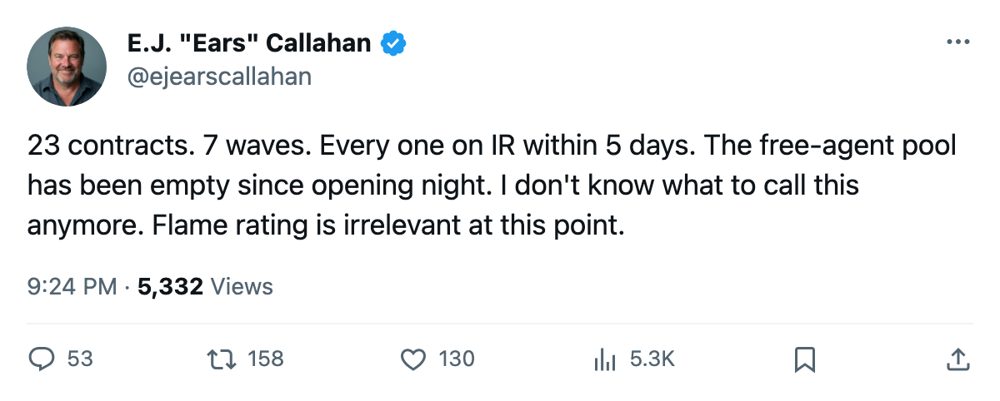
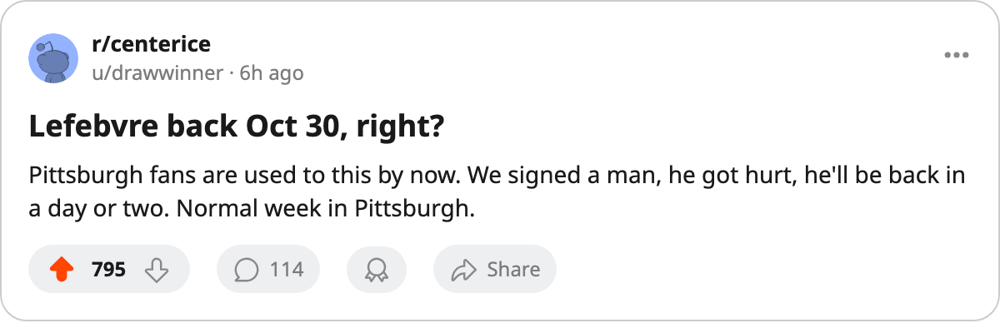

NSH
NSH PIT
PIT VAN
VANSign-and-Injure, Round 7: 3 Clubs Filed Oct 24. All 3 Are on IR Today. The Pool Reads None.
Rucinsky, Lefebvre, Allen. Three contracts, three body parts, zero days in a sweater. The running count is 23.
 E.J. "Ears" CallahanInsider · The Hot Stove
E.J. "Ears" CallahanInsider · The Hot Stove
The sign-and-injure pattern holds 23 names, 0 shifts in the pool

Nashville signed Martin Rucinsky78 for $508,430 on Oct 24. By Oct 27, the league had him listed with a wrist. He returns Nov 4.
Pittsburgh signed  Guillaume Lefebvre75 for $142,680 on Oct 24. A rib showed up in the same window. He is back Oct 30.
Guillaume Lefebvre75 for $142,680 on Oct 24. A rib showed up in the same window. He is back Oct 30.
Vancouver signed  Bryan Allen74 for $378,270 on Oct 24. His elbow gave between Oct 27 and Oct 29. He returns Nov 3.
Bryan Allen74 for $378,270 on Oct 24. His elbow gave between Oct 27 and Oct 29. He returns Nov 3.
Three contracts, three injuries, all filed on the same day, all on the injured list within five days. This is Round 7 of a pattern that the desk has tracked since opening night. The count is 23 contracts filed under this pattern. The free-agent pool reads none.
The arithmetic nobody is auditing
Round 1: 4 names, opening week. Round 2: 2 filed Oct 10. Round 3: Boston added 2. Round 4: the Calder winner filed Oct 13, ankle by Oct 15. Round 5: 4 filed Oct 15-16. Round 6: 7 clubs filed 7 contracts on Oct 17, every one on IR by Oct 22. Round 7: 3 filed Oct 24, all on IR by Oct 29.
The salaries have been small this time around. Rucinsky at $508,430, Allen at $378,270, Lefebvre at $142,680. The earlier waves carried bigger names. The pattern holds regardless of the dollar figure on the deal.
What the pattern costs the pool
The free-agent pool has not carried a name since the desk began logging these entries. Twenty-three contracts filed and placed on IR across seven waves, and no club has signed a replacement.
The three clubs involved tonight each carry injuries beyond the new signing. Pittsburgh already had 2 men on IR before Lefebvre's name appeared; the count is now 3. Vancouver already had  Mattias Ohlund80 out with a foot; the count is now 2. Nashville carried no one before Rucinsky; the count is 1.
Mattias Ohlund80 out with a foot; the count is now 2. Nashville carried no one before Rucinsky; the count is 1.
League sources say the league's medical review has flagged the timing. A league source, a man who would know, put it this way: "They sign a man on Friday and he's hurt by Monday. You don't need a crystal ball. You need a calendar."
The desk cannot confirm what any of those clubs intended. The league record shows a signature on Oct 24 and an injury designation on Oct 27-29.
The 23 names will settle on their own return dates. The pool will read none until it doesn't.

